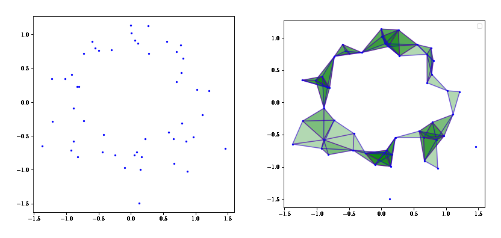
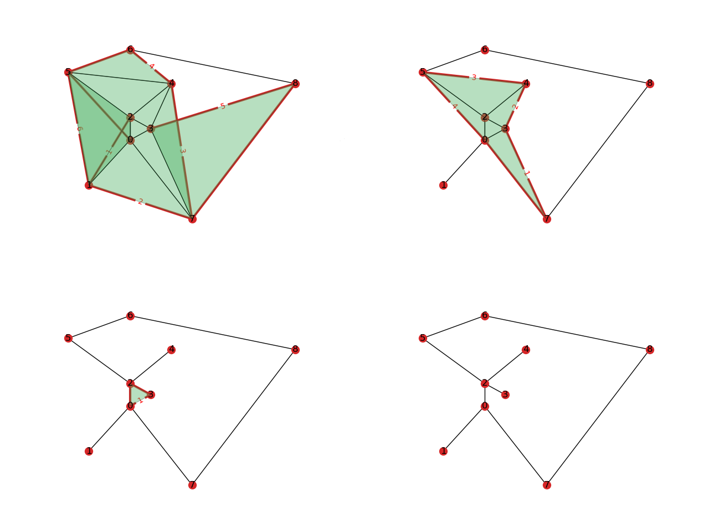
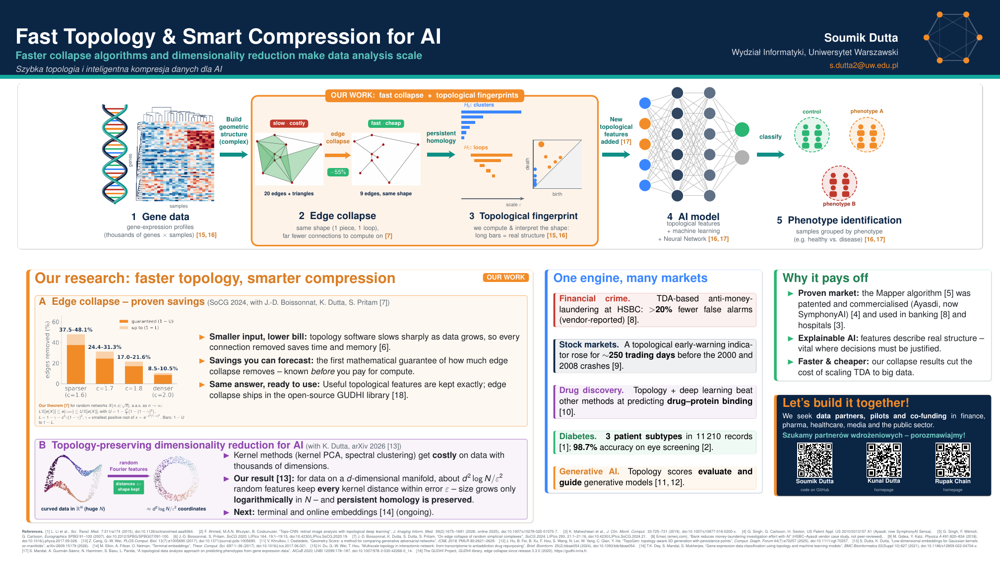

Topological data analysis, explained
A short introduction to what TDA is and what a collapse does, followed by my talk slides and a poster.
The idea in a few sentences. Imagine a spreadsheet with thousands of columns and millions of rows. Humans cannot visualize data in that many dimensions. Mathematics can still read its shape: does it have clusters, holes, loops? That is topological data analysis, and we try to make it faster. Now the rows can be moving windows of stock prices, or the angles between amino acids in a folding protein. With this extra shape information, AI may make better predictions of market crashes, of phenotypes in biomedical science, or in other fields, depending on the data.
What is topological data analysis?
Topological data analysis (TDA) is a way of analysing large, high-dimensional datasets by looking at their shape. Data that is high-dimensional, incomplete and noisy is hard to summarise; topology offers descriptions — how many connected pieces, how many loops, how many voids — that are resistant to noise and do not depend on the exact choice of coordinates or metric.
The first step is to turn a point cloud into a topological object. A common choice is the Vietoris–Rips complex: connect any two points that are closer than a chosen scale, and fill in a triangle, tetrahedron and so on whenever all of its edges are present.

Simplicial complexes
The object built this way is a simplicial complex: a collection of vertices, edges, triangles and their higher-dimensional analogues, glued together along shared faces. It is a discrete version of a topological space — graphs are the special case with nothing above edges — and it is something a computer can store and compute with.
Persistent homology
No single scale is the right one, so TDA varies the scale and tracks which features appear and disappear. This is persistent homology. Its output is a persistence diagram, or barcode: features that survive over a long range of scales reflect real structure in the data, and short-lived ones are noise. These topological fingerprints can then be fed into statistics or machine-learning models.
What is a collapse?
The catch is size. A complex can have far more simplices than the data has points, and computing persistent homology on it is expensive in both time and memory. A collapse is a way to remove parts of a complex that do not matter topologically, before the expensive computation starts.
- Simple collapse (J. H. C. Whitehead, 1939) removes a simplex that is a face of exactly one other simplex, together with that simplex.
- Strong collapse (Barmak and Minian, 2012) removes a whole vertex when it is dominated by another vertex.
- Edge collapse (Boissonnat and Pritam, 2020) removes an edge when it is dominated by a vertex — that is, when every maximal simplex containing the edge also contains that vertex.
Each of these keeps the homotopy type of the complex, so it has the same pieces, loops and voids afterwards, and the same homology. Repeating edge collapses until no dominated edge is left gives the core of the complex.

How much does this save? That is the question of my PhD research: for random complexes we prove how large the core is after any number of collapsing phases.
Slides
On Edge Collapse of Random Simplicial Complexes — my talk at the 40th International Symposium on Computational Geometry (SoCG 2024), joint work with Jean-Daniel Boissonnat, Kunal Dutta and Siddharth Pritam. The first part introduces simplicial complexes, collapses and edge collapse; the rest covers the results and the ideas of the proof.
A selection of slides; click any of them, or open the full deck (PDF, 67 pages).
Poster
Fast Topology & Smart Compression for AI — a poster on how faster collapse algorithms and dimensionality reduction make topological data analysis scale, and where it is used.
